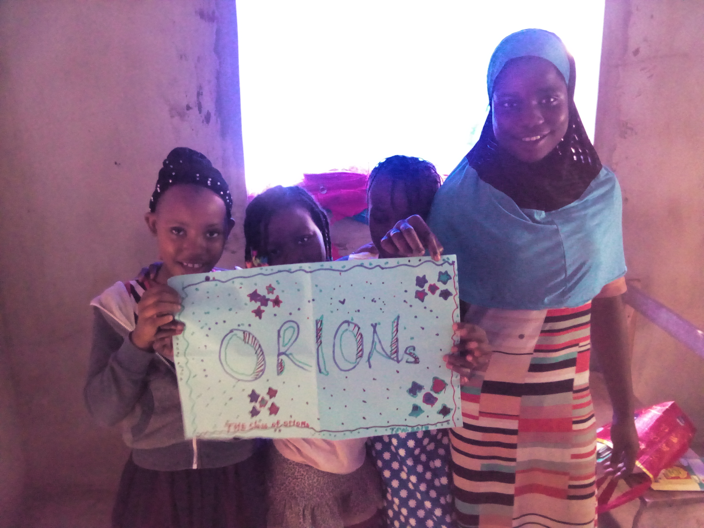

Life here and then
The art of teaching is an ancient but ever-present one. A good teacher must keep evolving. My teaching philosophy involves introducing learners to practical uses of the skills learnt in the classroom. This is acheived through participation in competitions, undertaking excursions, constructing or building objects. We also rear fish and plant crops.
Even in the classroom, teaching must mirror reality. Therefore, the teaching approach should be differentiated in such a way that it addresses the concern of all types of learners (kinesthetic, auditory, visual, artistic, etc). My class inculcates art into every lesson. It also uses designs, projects, and games.
The learner, even though in school, must not be isolated from his/her culture. As a culture therefore, I encourage my pupils to showcase the positive aspects of their culture while campaigning against the negative ones. So, cultural day is a day that my learners and I always look forward to. In one of such events, I got to know that I have 14 different tribes in my classroom. We learnt greetings and a few other things in those tribal languages.
Apart from textbooks and class displays, pupils also learn through movies. So, it is a culture to watch educational movies. Who wouldn't draw inspiration from Akeela and the bee or Three idiots or To Sir with love or The gingerbread man?. We catch fun and learn.
Although there are different stakeholders in the educational life of learners, their parents are the most important stakeholders. So we do engage with our learners' parents to seek their support and wisdom in acheiving the goals of their children. At other times we create special clubs (e.g Literacy club, Read-to-Lead) in order to boost the academic outcomes of participants. Participants are drawn based on needs.